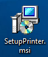
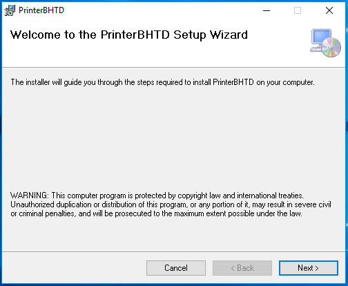
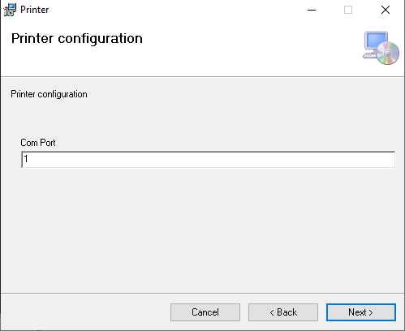
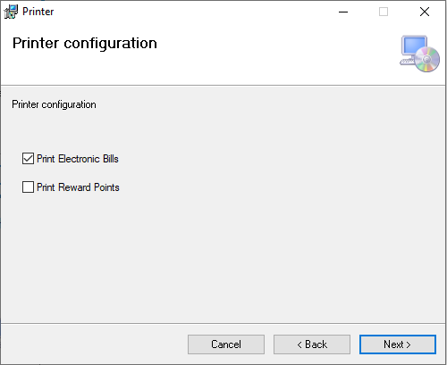
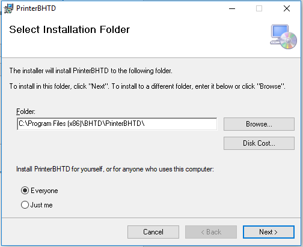
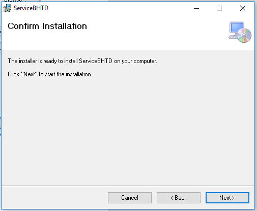
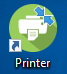
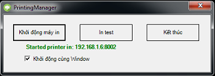

Cài đặt chương trình Printer
- Trước tiên cần setup IP tĩnh cho máy tính All-in-one. Bắt buộc phải setup theo giá trị PRINTERIP tại chức năng Cấu hình thông tin OPT trên EGAS. Có thể setup theo hướng dẫn tại đây
- Đăng nhập máy tính All-in-one với quyền Administrator. Ngoài ra, yêu cầu máy tính cài đặt cần phải có dotNet Framework 4.5.2. Nếu chưa cài framework này, cần cài đặt trước khi bắt đầu cài BHTĐ. Tải phiên bản Offline Installer ở trang chủ Microsoft tại đây
- Click vào file “SetupOPT.msi”  là file dùng để cài đặt chương trình để bắt đầu cài đặt.
- Ở cửa sổ bật lên, người dùng click vào ô “Next” để tiếp tục cài đặt. Nếu hủy cài đặt, có thể chọn vào “Cancel” hoặc đóng cửa sổ cài đặt bằng dấu X ở góc trên cùng bên phải của cửa sổ

- Cửa số tiếp theo dùng để nhập các thông tin cấu hình thông tin kết nối tới hệ thống BHTĐ đã được cài đặt từ trước đó. Các thông tin này gồm:
+ Com Port: Là cổng Com dùng để in biên lai trên cột bơm OPT. Mặc định là cổng COM1
- Cửa số tiếp theo dùng để nhập các thông tin cấu hình mẫu in. Các thông tin này gồm:
+ Print Electronic Bills: True là máy in sẽ in mã tra cứu hóa đơn điện thử nếu cần. Mặc định là true
+ Print Reward Points: True là máy in sẽ in điểm tích lũy của khách hàng theo giao dịch tương ứng. Mặc định là false
- Cửa sổ tiếp theo dùng để cấu hình vị trí cài đặt chương trình Printer trên máy All-in-one. Mặc định, hệ thống sẽ được cài đặt vào thư mục “C:\Program Files (x86)\BHTD\PrinterBHTD\”. Người dùng có thể chỉnh sửa vị trí cài đặt này nếu cần.
- Option lựa chọn “Everyone” hoặc “Just me” dùng để định nghĩa chương trình này cài đặt cho tất cả các User trên máy hay chỉ cho User hiện tại của máy tính. Mặc định chọn “Everyone”. Lưu ý: không nên chọn “Just me” vì máy tính bán hàng có thể có nhiều User khác nhau sử dụng.
- Cửa sổ tiếp theo (Hình 31) dùng để xác nhận việc cài đặt chương trình. Người dùng chọn vào “Next” để bắt đầu việc cài đặt. Nếu thấy các thông tin cấu hình chưa đúng, có thể chọn “Back” để kiểm tra lại và chỉnh sửa theo các bước bên trên nếu cần.
Lưu ý: Khi chọn bắt đầu cài đặt, người dùng cần có bước xác thực quyền Administrator của máy tính. Việc cài đặt sẽ mất khoảng 2~5 giây.
- Khi cài đặt thành công, màn hình hiển thị bước cuối cùng như sau:

- Nếu không đến được màn hình như trên thì tức là cài đặt không thành công. Có thể thử cài đặt lại theo các bước trên.
- Khi cài đặt thành công, trên màn hình Desktop của máy tính sẽ xuất hiện Icon của chương trình  . Click vào icon để bắt đầu chương trình in ấn.
- Lưu ý: Khi mở chương trình lên sẽ có yêu cầu cấp quyền Admin, chọn vào ô “Yes” để mở chương trình.
- Khi người dùng muốn “Kết thúc” chương trình in thì sẽ phải nhật mật khẩu để tắt. Mật khẩu mặc định là “1”
+ Các thông số sau khi cài đặt được lưu trong file cấu hình như sau
{
"comPort": 1,
"isPrintRewardPoints": false,
"isPrintElectronicBill": true
}